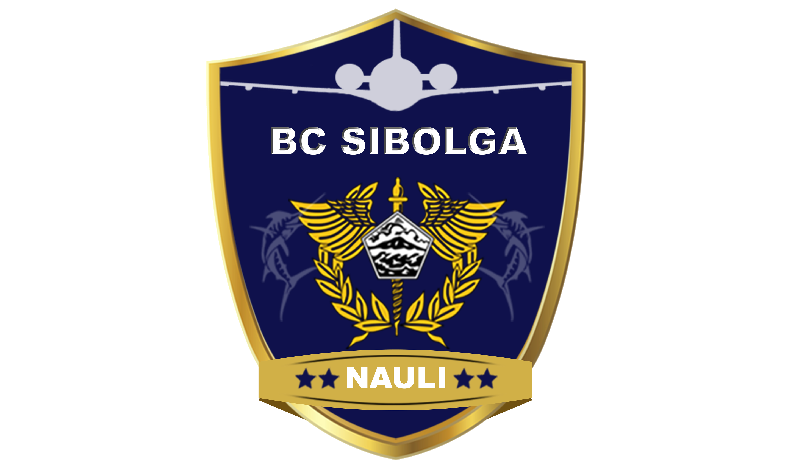
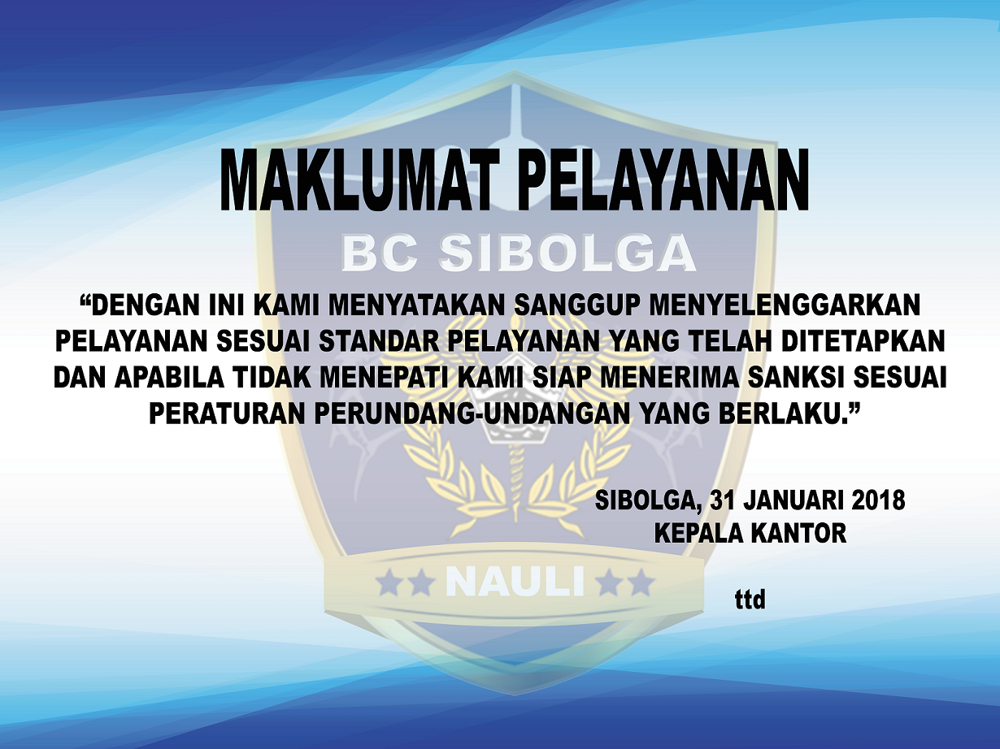
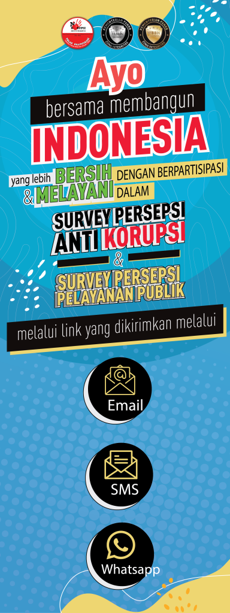
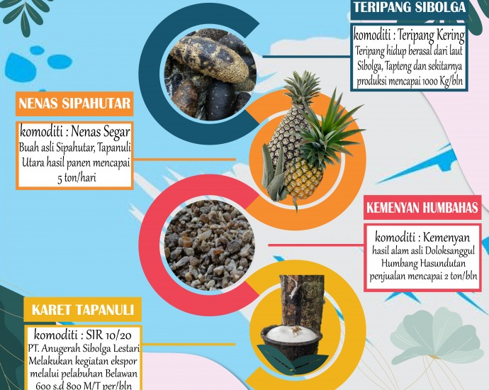
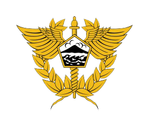

|  |
KANTOR PENGAWASAN DAN PELAYANAN BEA DAN CUKAITIPE MADYA PABEAN C SIBOLGAOfficial Website Kantor Pengawasan dan Pelayanan Bea dan Cukai Tipe Madya Pabean C Sibolga |

|

|
|
Indeks Kepuasan Pengguna Jasa 2020
Sebagai bentuk komitmen kami untuk terus meningkatkan pelayanan yang kami sediakan pada Kantor Pengawasan dan Pelayanan Tipe Madya Pabean C Sibolga, kami melakukan kegiatan Survey Kepuasan Pengguna Jasa setiap tahunnya. Survey ini dilakukan demi tercapainya kinerja organisasi yang optimal baik dari sisi pelayanan maupun sarana dan prasarana layanan yang tersedia.
|

|
|
|

|
Sinergi GPEI Sumatera Utara dan Komunitas Pelabuhan Sibolga serta Pemerintah Daerah Mewujudkan 1000 Eksportir Baru dari Sumatera Utara untuk Indonesia Maju2021-05-06 BY: KPPBC SIBOLGA ON: 6 MEI 2021 IN: DORONG EKSPOR, PEMULIHAN EKONOMI NASIONAL (PEN), SINERGI BEA CUKAI“…Bea Cukai Sibolga siap mendukung dan mengambil bagian dalam program GPEI untuk mendorong ekspor…”-Ahmad Luthfi, Kepala KPPBC TMP C Sibolga |
|
| Kementerian Keuangan | |
|---|---|
|  | |
| Republik Indonesia | |
| Jalan Horas Pelabuhan Sambas Sibolga | |
| Kode Pos – 22532 | |
| Telepon : (0631) 21655 | |
| Faksimile : (0631) 24311 | |
| Website : bcsibolga.beacukai.go.id |